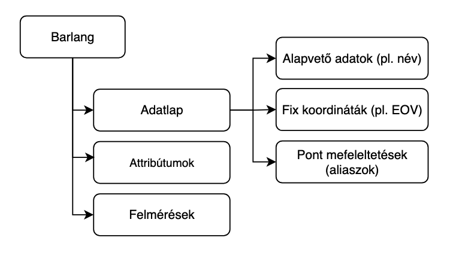
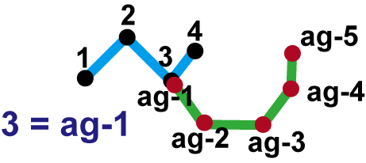

Ez a fejezet részletesen bemutatja az alkalmazás hierarchikus adatstruktúráját és az egyes elemek közötti kapcsolatokat.
📊 Általános adatmodell áttekintése
Barlangok
Egy projektben több barlangot is kezelhet, minden barlang nevének egyedinek kell lennie. Minden barlang:
- Saját nevet és metaadatokat tartalmaz (barlang adatlap)
- Egy vagy több felmérést tartalmazhat
- Attribútumokat tartalmazhat
- Pont megjegyzéseket tartalmazhat
Az attribútumokat egy későbbi fejezet taglalja, így azokra most nem térnénk ki.
A barlang adatlapja a következőket tartalmazza:
- Barlang alapvető adatait (mint például a barlang neve, vagy kataszteri száma)
- Pontok neveinek megfeleltetését (aliaszok)
- Fix koordinátákat (UTM, EOV ...)

Pont megjegyzések
Habár a felmérések során megadott megjegyzések lehetővé teszik a 'pontig' állomás jellemzését, de az induló pont jellemzését ez a módszer nem teszi lehetővé. Az általános pont megjegyzések lehetővé teszik tetszőleges pont jellemzését, leírását igazodva más szoftverekhez (pl. TopoDroid)
Pont megfeleltetések (aliaszok)
Az aliaszok lehetővé teszik, hogy az akár különböző felmérésekben lévő pontokat egymásnak megfeleltessük. Gyakori megoldás egy új felmérés kezdőpontjának valamely régebbi felmérés egy már létező pontját adjuk meg, hiszen enélkül az új felmérés nem kapcsolódna a régebbi felmérésekhez. A Speleo Studio-val erre már nincs szükség. Az új felmérés kezdőpontja tetszőleges lehet, a korábbi felmérésekhez kapcsolását a pont aliaszok teszik lehetővé. TopoDroid-ban ezt a hasonló funkciót Project Equates-nek vagy Kapcsolódó pontoknak hívják. Az ábrán az 'ag-1' es a '3' mérési pontokat feleltetjük meg egymásnak.

Fix koordináták
A fix koordináták lehetővé teszik, hogy a barlangokat egy olyan koordináta rendszerben jelenítsük meg, amelyet más alkalmazások is használnak. Jelenleg az EOV és UTM vetületi koordináta rendszereket támogatja a Speleo Studio (csak a kezdőpont koordinátája adható meg), de fel lehet venni fix pontokat WGS84 (GPS) koordináták konvertálásával is.